The campaign archive / Edition 01
Brand Turning
Points.
Why I started this archive
I started Brand Turning Points to celebrate the ideas that changed how we saw brands, and to be straight about what we actually know about them.
Going back through the sources, one thing kept surfacing. The campaigns everyone quotes are rarely the ones with the best proof. So every case here carries its number, its source and a plain rating of how far that evidence goes.
15 case studies / 1959 to 2023
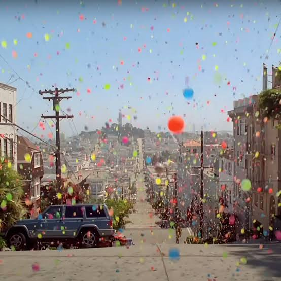
Opening story / Sony BRAVIA / 2005
The day the street turned to colour.
On a San Francisco hillside, Sony made a picture-quality claim feel like something you could reach out and touch.
01 / The finding
The most famous campaigns rarely prove they worked.
None of the 15 cases in this edition has a public source that isolates the campaign’s own commercial effect. Most report what happened after the work ran. Sales rose, people watched, people said they felt differently. That is useful, but it isn’t cause.
The ladder sorts every case by the strongest public evidence I could find. It rates the record, not the work. Some of the best ideas here sit on the bottom rung.
Only This Girl Can publishes a modelled estimate, and it values health benefits rather than sales.
- 1 A model estimates the effect against a baseline. Sport England
- 7 Sales moved, but other causes are not separated out. Apple, California Milk Processor Board, Snickers, Old Spice, Coca-Cola, Patagonia, Mattel & Warner Bros.
- 2 People who saw it said something changed. Volvo Trucks, Always
- 2 The number counts attention, not outcomes. The Zimbabwean, Dove
- 3 The record shows the work existed and endured. Sony BRAVIA, Volkswagen, Nike
02 / The patterns
Five ways to change what people see
Fifteen stories, five mechanisms. Choose one to filter the archive.
Stage the benefit so people can see it for themselves.
Say the uncomfortable thing first and make it the point.
Hand the audience a part to play and let them spread it.
Show people a judgement they did not know they held.
Put people in the picture who were missing from it.
03 / The screening room
Watch the work
Four films to start with. Look for the creative choice that makes each one work before you read the case.
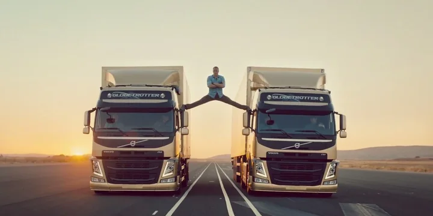
Volvo Trucks / 2013
The Epic Split
The precision is what makes the stunt possible.
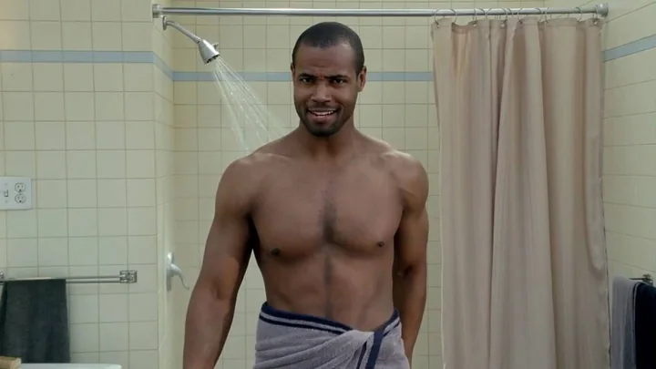
Old Spice / 2010
The Man Your Man Could Smell Like
Watch the eye contact as the sets change.
Mattel & Warner Bros. / 2023
Barbie: The Movie Launch
The film introduces a world the partnerships bring to life.
04 / The collection
The campaigns
Open a case for the idea, the lesson and my take. The full story, sources and measurement notes sit one click further in.
Modelled effectSales trendSurveyReach only or archival
15 campaigns
01 Sony BRAVIA / 2005 / DemonstrationBallsThe day San Francisco rolled downhill in colour. 250,000Balls in the shoot · legacy fact
The idea
Fallon and director Nicolai Fuglsig sent brightly coloured bouncy balls down San Francisco streets. Residents filmed the shoot and shared the spectacle before the UK television launch.
The lesson
Make the benefit visible enough that the demonstration itself becomes the thing people share.
My take
I'd still brief a demonstration this way. If the claim is visual, stop describing it and stage it.
Original creative Film archive
Watch the film at the History of Advertising TrustImage: Sony BRAVIA campaign still
Read the full case
The starting point
LCD televisions were being sold through specifications. Sony needed a reason for people to care about how a picture felt.
What changed
Colour became an experience people could picture and pass on. The making of the film became part of the distribution.
Why it’s memorable
The image is instantly recognisable even as a single frame. José González’s quiet cover of “Heartbeats” makes the bouncing colour feel playful and unexpectedly tender, giving a TV demonstration the rhythm of a short film.
What the number can and can’t show
Production scale. The IPA case documents early diffusion through digital influencers and into wider audiences. The public summary gives no campaign-level sales lift, ROI or CAC.
How to measure a similar idea
Measure the lift in association with superior colour, then compare retailer sell-through in matched markets.
Further sources
02
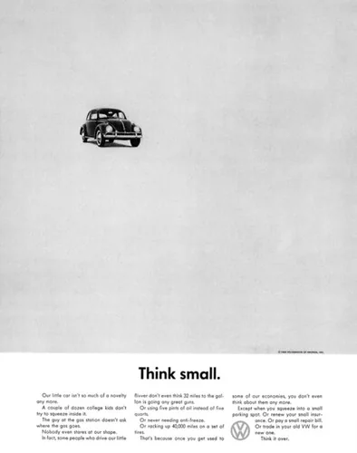
Volkswagen / 1959 / Reframed weaknessThink SmallThe little car that made big cars look excessive.
1962Archival print execution · legacy fact
The idea
Doyle Dane Bernbach placed a tiny Beetle in a field of white space. Wry copy turned smallness into a case for economy and practicality.
The lesson
If a perceived weakness has a real customer benefit, give that feature the most conspicuous space in the ad.
My take
The bravest line in the ad admits the car is small. Most brands still can't bring themselves to say the obvious thing first.
Original creative Print artefact
View the 1959 print ad at the SmithsonianImage: Volkswagen ad, Smithsonian National Museum of American History
Read the full case
The starting point
In a market where car advertising made size and flash look like success, the Beetle had little to gain by imitating the competition.
What changed
Buying a small car could signal good judgement. The layout made the argument before the reader reached the copy.
Why it’s memorable
The empty page makes the tiny car the most conspicuous object on it. The layout performs the argument for restraint before the headline makes it explicit.
What the number can and can’t show
Archival evidence. The Smithsonian dates an example to 1959. The 1962 execution documents the idea’s continued use. The cited material gives no attributable sales lift.
How to measure a similar idea
Compare value perceptions, dealer enquiries and sales against markets using conventional automotive messaging.
03
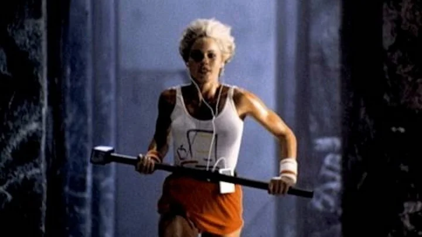
Apple / 1984 / Exposing an assumption1984A hammer made the personal computer feel personal.
70,000Launch units sold
The idea
Chiat/Day and Ridley Scott made a dystopian film in which a runner throws a hammer into an authoritarian broadcast. Apple aired it during the Super Bowl ahead of the Macintosh launch.
The lesson
Give a product launch a clear cultural opponent when the product delivers a credible alternative.
My take
Everyone remembers the hammer. Fewer remember that it aired nationally just once, and that scarcity became part of the legend.
Original creative Museum film record
Explore the original commercial at the Computer History MuseumRead the full case
The starting point
Apple had to make a new computer matter to people accustomed to seeing computing as the domain of institutions and specialists.
What changed
The Macintosh entered the market as a symbol of individual agency. The emotional launch made the practical promise of a more approachable computer feel consequential.
Why it’s memorable
The hammer blow gives the story an image that can stand in for the whole film. The audience feels the release before Apple names the computer, and the product inherits that feeling.
What the number can and can’t show
Product launch sales. The total includes the combined effects of distribution, press, demand and other marketing. The isolated contribution of the spot is unknown.
How to measure a similar idea
Track first-time buyers and estimate incremental units against a launch baseline that accounts for press and distribution.
Further sources
04 Nike / 1988 / RepresentationJust Do ItAn older runner made Nike’s invitation bigger than sport. 37 yearsPlatform span · legacy fact
The idea
An early Wieden+Kennedy spot followed veteran San Francisco runner Walt Stack. His unglamorous routine made the line feel like a prompt anyone could act on.
The lesson
A brand line can outlive its first advert if it gives a broad audience something specific to do.
My take
Three words that fit a marathon runner and someone who hasn't trained in years. That range is the real asset.
Original creative Film archive
Watch the Walt Stack spot at Ads of the WorldImage: Nike commercial still, filed as evidence with the USPTO
Read the full case
The starting point
Elite athletes could make a sports brand aspirational, but they also set a high bar for who might recognise themselves in the advertising.
What changed
Nike gave people a way to identify with the act of starting, whether or not they thought of themselves as athletes.
Why it’s memorable
Walt Stack’s matter-of-fact delivery makes the achievement feel ordinary in the best sense. His humour and routine put a human face on a line that could otherwise sound like a command.
What the number can and can’t show
Brand-platform longevity, calculated from Nike’s documented dates. The cited material does not isolate the original campaign’s sales, ROI or CAC.
How to measure a similar idea
Measure brand association and incremental first purchase among occasional exercisers as well as established athletes.
05
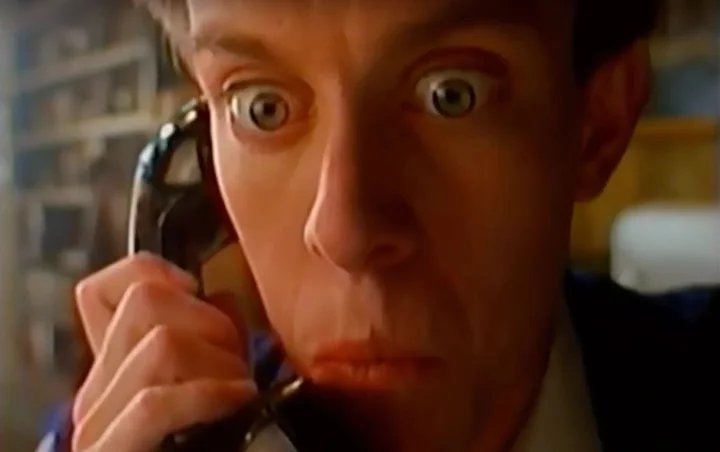
California Milk Processor Board / 1993 / DemonstrationGot Milk?Milk became interesting the second it ran out.
+2.0%California milk volume
The idea
Goodby Silverstein & Partners dramatised milk deprivation. In the Aaron Burr spot, a mouthful of peanut butter stops a history buff from answering a radio quiz he knows cold.
The lesson
For a familiar product, show the cost of its absence in a moment the buyer recognises.
My take
It sells the absence of the product. That's harder to pull off than any feature list, and it's a good argument for testing deprivation in research.
Original creative Film archive
Find the original Aaron Burr spot in the Milk Mustache DatabaseImage: California Milk Processor Board commercial still, via Yahoo Entertainment
Read the full case
The starting point
Consumers already knew milk was nutritious. Reminding them of that fact had little to do with the moment they actually wanted a glass.
What changed
The campaign made milk feel like the missing piece in rituals people already enjoyed. It gave existing drinkers a reason to keep it in the fridge.
Why it’s memorable
The viewer can hear the right answer and knows exactly why the caller cannot say it. That shared frustration makes an empty carton the punchline and the product reminder.
What the number can and can’t show
Observed category sales. The percentage is calculated from the ANA case’s volumes. It does not isolate advertising from price, distribution or wider category changes.
How to measure a similar idea
Compare purchase frequency and volume against similar regions, adjusting for category and pricing trends.
06
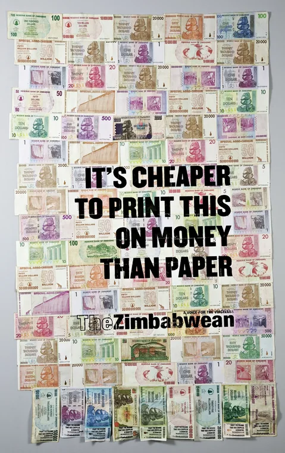
The Zimbabwean / 2009 / Reframed weaknessTrillion Dollar CampaignA banknote that could barely buy anything became the medium.
2m+Rollout week web hits
The idea
TBWA\Hunt\Lascaris in Johannesburg printed the campaign on real Zimbabwean banknotes rendered nearly worthless by hyperinflation. The notes became handouts, posters and even billboards.
The lesson
Choose a medium that physically carries the argument.
My take
The note is the argument. You can't pull the message away from the worthless paper it's printed on, which is why it travelled.
Original creative Outdoor and print artefact
View the banknote campaign at D&ADRead the full case
The starting point
The independent Zimbabwean newspaper needed readers outside Zimbabwe to help sustain distribution back home after an import duty made copies more expensive.
What changed
The campaign made an economic crisis tangible. The thing people could hold in their hands also made the case for why the newspaper’s reporting mattered.
Why it’s memorable
The absurd number on a real banknote makes the argument before the copy does. A person could take the evidence home, show it to someone else and retell the story without the billboard.
What the number can and can’t show
Entrant-reported web hits. A hit is a technical traffic count and can include multiple requests per page. The entry gives no comparable unique-visitor count, subscription uplift or CAC.
How to measure a similar idea
Track attributable subscriptions, reader donations and the cost of getting a copy into the intended market.
07
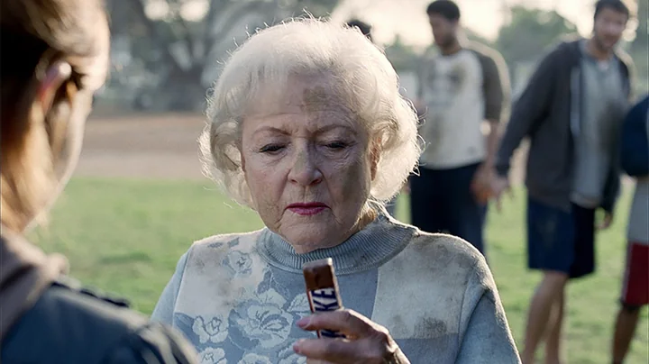
Snickers / 2010 / DemonstrationYou’re Not You When You’re HungryBetty White made hunger a personality problem.
+15.9%One-year sales growth
The idea
In the opening US Super Bowl film, Betty White plays an out-of-sorts football teammate until a Snickers restores the player to himself. The substitution became a format local markets could adapt.
The lesson
Build a repeatable story with a fixed product role and enough room for local culture.
My take
A universal truth in a format you can recast. The faces change, the structure doesn't, and that's what let it run in 58 markets.
Original creative Film archive
Watch the Betty White spot at Ads of the WorldRead the full case
The starting point
A chocolate bar can be easy to recognise and still lack a distinctive reason to buy it in the moment.
What changed
Snickers owned an instantly recognisable social moment: being so hungry you stop acting like yourself.
Why it’s memorable
Betty White in a rough football game is funny before the first line lands. The transformation at the end turns the visual joke into a repeatable story in which the bar always has a job.
What the number can and can’t show
Reported sales growth, with share gained in 56 of the 58 markets in the case. A separate IPA paper reports over US$70m incremental sales for the later Mr Bean execution. Those are different results and scopes.
How to measure a similar idea
Compare incremental household penetration and margin across markets, using media and promotion data.
Further sources
08 Old Spice / 2010 / ParticipationThe Man Your Man Could Smell LikeA body-wash pitch turned into a conversation. +60%Body wash sales growth
The idea
Isaiah Mustafa addressed women directly in a film that moved from bathroom to boat to horseback. The character later answered individual fans and celebrities with 186 videos shot in two and a half days.
The lesson
Give the character a consistent voice and a reason to respond. The audience will help write the next scene.
My take
The response videos get the credit, but the sales number came first. I'd want to know how much of the legend belongs to the sequel.
Original creative Original film
Watch on the Old Spice YouTube channelRead the full case
The starting point
Wieden+Kennedy identified women as a major audience for body wash purchases, even when the intended user was a man.
What changed
Old Spice became a brand people could joke with. The live responses gave viewers a role in a campaign that began as a broadcast.
Why it’s memorable
Isaiah Mustafa’s unbroken eye contact holds the film together while the sets change around him. That deadpan delivery also made the character recognisable in 186 individual replies.
What the number can and can’t show
Agency-reported product sales growth. May precedes the July response activation, so the number belongs to the earlier campaign period. It cannot show the response videos’ separate sales effect.
How to measure a similar idea
Separate the effects of the launch film, promotions and the response campaign on incremental buyers.
10
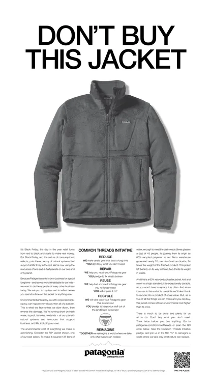
Patagonia / 2011 / Reframed weaknessDon’t Buy This JacketOn Black Friday, a retailer asked people to buy less.
~30%Company sales growth
The idea
Patagonia bought a New York Times ad and detailed the environmental cost of making one of its own jackets. Its existing repair and reuse efforts gave the message practical substance.
The lesson
A surprising stance can build credibility when customers can point to what the company is already doing about it.
My take
Telling people not to buy only works when the product and the repair service back it up. Without them it's just a clever headline.
Original creative Print artefact
Read the original New York Times ad at PatagoniaRead the full case
The starting point
An outdoor brand that promoted environmental responsibility also depended on selling things. Black Friday made that tension especially visible.
What changed
Patagonia invited customers to judge it by how long its products could stay in use. The brand made the contradictions of consumption part of the conversation.
Why it’s memorable
A full-page product image and a refusal to sell make the reader stop. The environmental cost in the copy gives the reversal a specific argument that a provocative headline alone could never carry.
What the number can and can’t show
Company sales trend in an IMD business-school case. The comparison shows what happened after the ad. It gives no estimate of how much the ad contributed or whether customers consumed less.
How to measure a similar idea
Track repair uptake, useful product life and contribution margin alongside brand trust.
11 Volvo Trucks / 2013 / DemonstrationThe Epic SplitA stunt made a steering system impossible to forget. Nearly halfStated purchase intent
The idea
Jean-Claude Van Damme did the splits between two reversing Volvo trucks. The tension of the stunt depended on the stability that Volvo Dynamic Steering was built to deliver.
The lesson
Make the technical feature indispensable to the action. If the stunt still works without the feature, the idea is too generic.
My take
A survey of people who saw the film will always flatter the film. I'd swap the view count for one matched-territory test on orders.
Original creative Original film
Watch on the Volvo Trucks YouTube channelRead the full case
The starting point
The precision of a heavy truck’s steering is commercially important, but technical language alone gives buyers little to remember.
What changed
A technical product claim became a film people chose to watch. Its entertainment value depended on the engineering claim being true.
Why it’s memorable
Van Damme moves slowly enough for viewers to see the risk build. The moment works because a slight steering wobble would break the illusion and the product claim at once.
What the number can and can’t show
Brand-reported purchase intent among exposed survey respondents. Volvo also reported 100m+ YouTube views across all six Live Test films in 2014. Neither result isolates the Epic Split’s effect on orders.
How to measure a similar idea
Measure incremental qualified enquiries, orders and margin in exposed sales territories over a full purchase cycle.
12
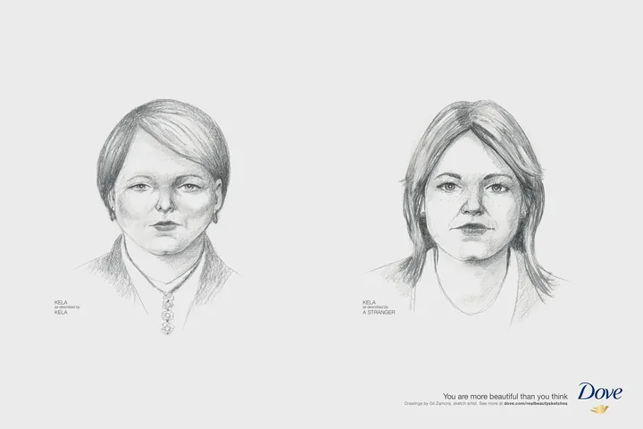
Dove / 2013 / Exposing an assumptionReal Beauty SketchesTwo portraits showed how harshly we can see ourselves.
124.9mOnline video views
The idea
Forensic artist Gil Zamora drew women from their own descriptions and then from a stranger’s description. The reveal put the two drawings beside each other.
The lesson
Use a simple reveal that lets viewers discover the insight for themselves.
My take
Views prove attention and nothing more. The idea deserved a published before-and-after belief study.
Original creative Brand film page
Watch and explore the sketches at DoveRead the full case
The starting point
Beauty marketing regularly gives people a standard to measure themselves against. Dove had been building a platform around questioning those standards.
What changed
The film made self-criticism visible in a way viewers could recognise and discuss. It also leaves an open question about whose judgement gets to define beauty.
Why it’s memorable
The two drawings make an internal judgement visible. The film lets the portraits sit beside each other long enough for the participants’ reactions to carry the emotional weight.
What the number can and can’t show
Guinness World Records cites the Unruly Viral Video Chart for the film’s view count. Views show distribution and attention. They cannot establish a sustained change in self-perception or Dove sales.
How to measure a similar idea
Measure belief and brand-association change before exposure, afterwards and again months later, with a comparison group.
13
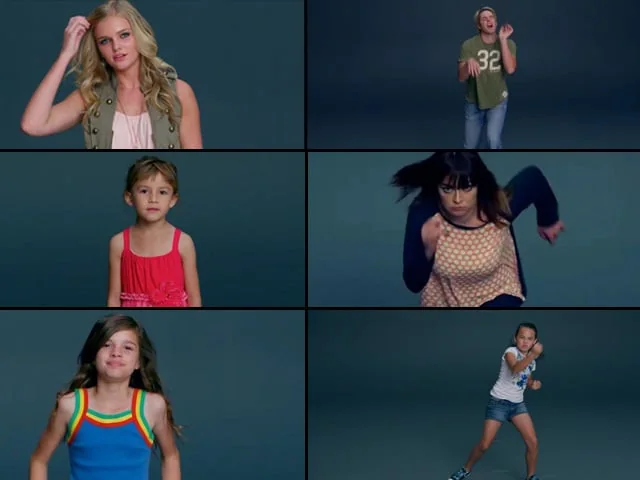
Always / 2014 / Exposing an assumption#LikeAGirlThe same words could be an insult or a source of pride.
~70%Self-reported attitude shift
The idea
Director Lauren Greenfield asked people to run, throw and fight ‘like a girl’. The contrast between the older participants’ caricatures and younger girls’ earnest efforts exposed the phrase as a learned put-down.
The lesson
Stage a contrast that exposes the assumption inside everyday language.
My take
It takes a phrase people say without thinking and shows them what it does. That's exposure rather than persuasion, and it's harder to forget.
Original creative Film archive
Watch the original social experiment at Ads of the WorldRead the full case
The starting point
For a brand that enters many customers’ lives around puberty, the link between growing up and losing confidence gave Always a specific issue to address.
What changed
A familiar insult became something audiences could question and reclaim. The action on screen made the reversal easy to understand without an explanation.
Why it’s memorable
The same direction produces two completely different performances. Seeing the girls take the instruction seriously makes it hard to hear the phrase the old way again.
What the number can and can’t show
The submitted APG case reports a self-reported change among surveyed viewers, alongside roughly 60% of men. The public summary gives no measure of long-term attitude change or incremental product sales.
How to measure a similar idea
Check whether the changed meaning endures, then separately measure brand preference and incremental trial.
Further sources
14
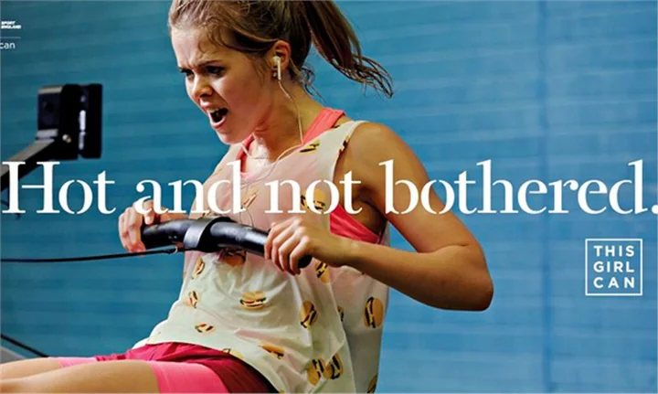
Sport England / 2015 / RepresentationThis Girl CanExercise ads finally showed what exercise feels like.
£35 per £1Modelled social return
The idea
The launch showed real women sweating, moving and enjoying activity in their own way. The advertising made visible the people fitness campaigns often left out.
The lesson
If embarrassment is the barrier, representation can be a practical intervention.
My take
The only case here with a modelled return. It also shows how much a headline number depends on what you choose to value.
Original creative Broadcaster film archive
Watch the 2015 launch film at ITV MediaRead the full case
The starting point
Research identified fear of judgement as a barrier to being active. Idealised images of fitness could reinforce the very feeling Sport England wanted to remove.
What changed
Exercise looked like something people could do on their own terms. The brand made participation feel more attainable by changing who was seen taking part.
Why it’s memorable
The sweat, effort and joy normally edited out of fitness ads become the images people remember. Missy Elliott’s soundtrack helps those real moments feel exuberant rather than apologetic.
What the number can and can’t show
Modelled social return on marketing investment. The same case estimates over 2m women became more active and reports that the activity gender gap narrowed from 1.79m to 1.55m. The £35 is a valuation of benefits rather than revenue or profit.
How to measure a similar idea
Follow participation and retention over time, using a comparison group and publishing the assumptions behind any monetised benefits.
Further sources
15 Mattel & Warner Bros. / 2023 / ParticipationBarbie: The Movie LaunchA toy brand built a world adults wanted to visit. No. 12023 global box office
The idea
The launch made elements of the film available outside the cinema. Airbnb brought back the Malibu DreamHouse with Ken as host, giving the film’s setting an address and a bookable experience.
The lesson
Give each partner a distinct way to extend the same world using something it already does well.
My take
A whole film acting as the brand platform. Brilliant to watch, but it tells marketers very little about what any single partnership earned.
Original creative Official trailer
Watch on the Warner Bros. Pictures YouTube channelRead the full case
The starting point
Mattel had a toy almost everyone could recognise. Turning that recognition into anticipation for a film required a role for people who had long since stopped playing with dolls.
What changed
Barbie could be experienced as an entertainment world and a cultural event. The partnerships gave audiences ways to take part before seeing the film.
Why it’s memorable
A recognisable pink world appeared somewhere viewers could actually visit. The DreamHouse made participation possible before opening night, and Ken as host gave the activation a story of its own.
What the number can and can’t show
Commercial outcome for the film as a whole. The ranking includes the effects of the film, reviews, distribution and promotion. It cannot isolate the value of individual partnerships or incremental toy sales.
How to measure a similar idea
Use partner-tagged referrals and market holdouts to estimate incremental ticket sales, brand lift and partner contribution.
Further sources
No campaigns match. Try clearing the search or setting a filter back to All.
05 / The evidence
What counts as impact?
Commercial outcomes
Incremental sales estimate the sales above an expected baseline. To calculate profit ROI, subtract campaign cost from the incremental contribution it generated, then divide by campaign cost. Campaign CAC divides that cost by incremental new customers. Year-on-year sales can provide context when those inputs are unavailable.
Perception and behaviour
Look for a documented change in what people believe, intend or do. Survey answers describe what people report. The timing, sample and comparison group determine what we can attribute to a campaign.
Reach and creative legacy
Views and shares show how far an idea travelled. Archival records, documented repeat use and production evidence can explain why a campaign matters when outcome data are sparse. Each number keeps its original scope.
The evidence rating
Every case gets one of five ratings, strongest first: modelled effect, sales trend, survey, reach only and archival. The rating describes the best public source, not the quality of the idea. A legacy fact, such as a date or a production number, is marked so it isn’t read as a result.
How cases earn a place
Each case has a specific shift in how people were invited to see the brand or category, a creative decision that made it possible and a traceable source. The collection is curated and unranked. The measurement ideas in each case are proposals for a comparable brief today.
06 / The editorial purpose
Keep the work in view.
A shot held long enough to make you uneasy. A phrase turned on its head. A package that gives a stranger a reason to talk to you. The archive preserves those decisions alongside the original work, its credits and the evidence that helps us understand what happened next.
Coming next / Edition 02